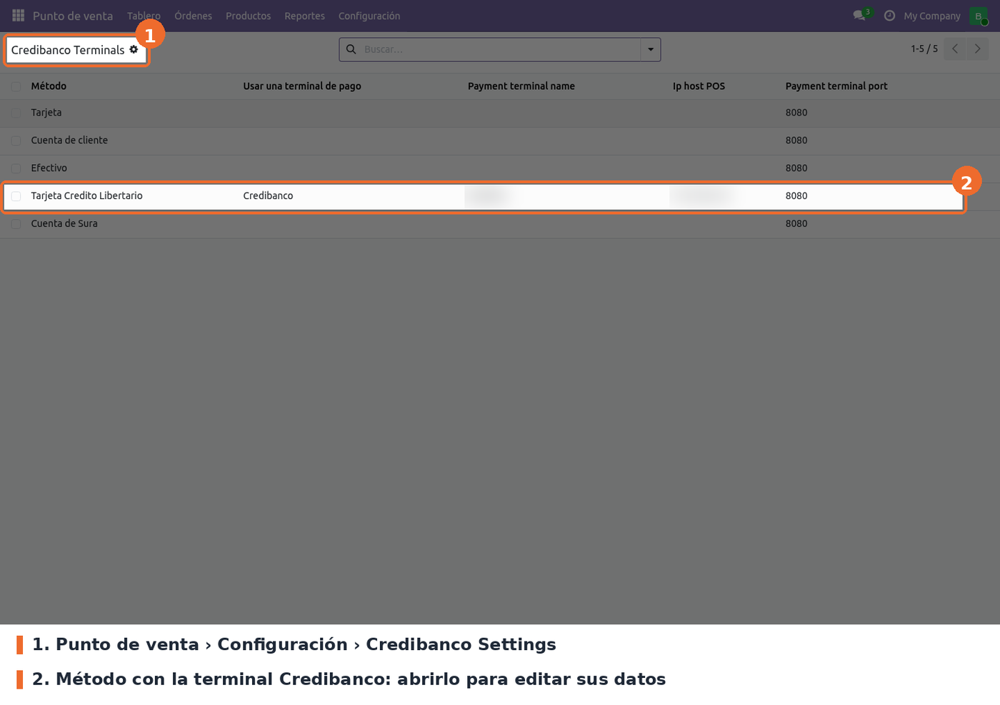
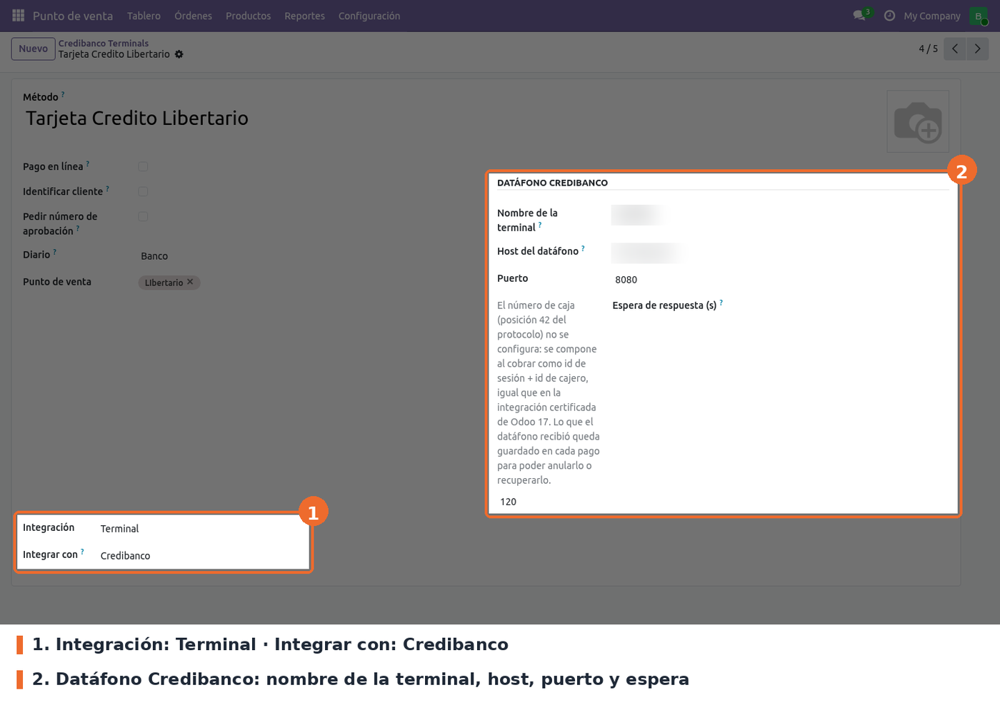
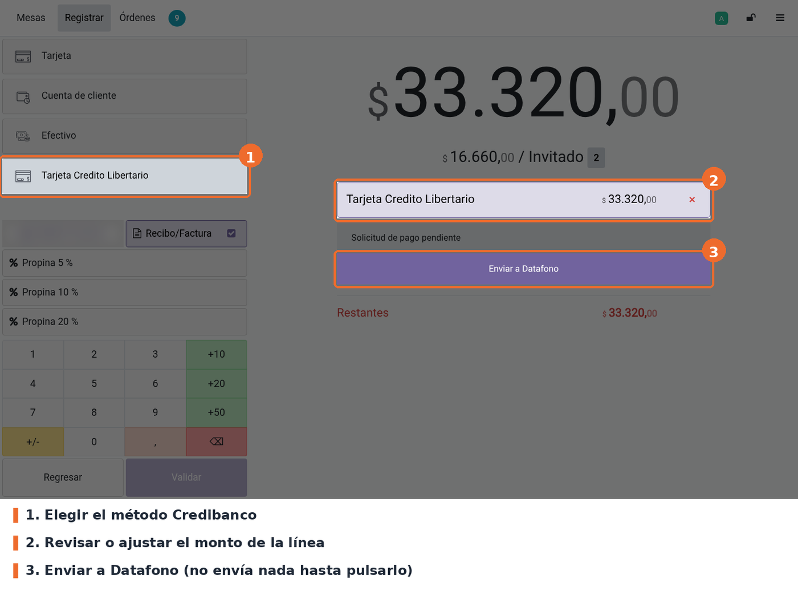
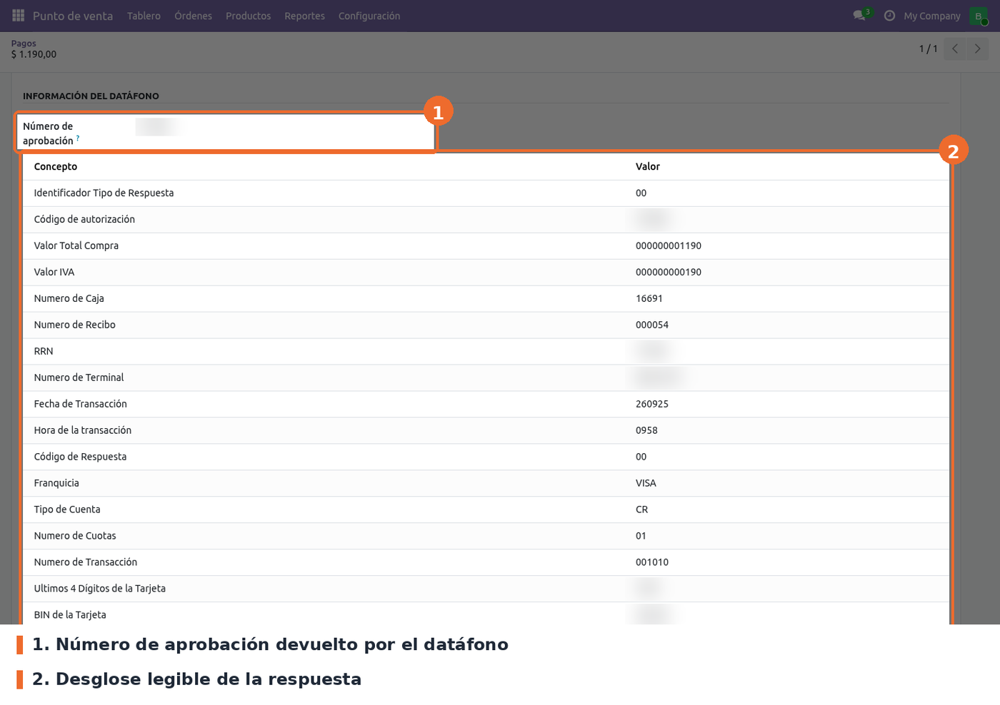

Cobra con el datáfono Credibanco desde la pantalla de pago del Punto de Venta. El cajero agrega el método de pago Credibanco, revisa el monto y pulsa Enviar a Datafono: el POS arma la trama del protocolo Credibanco (total, IVA, IAC, propina, caja, número de transacción y cajero), la envía al datáfono y, si el cliente aprueba, deja la línea pagada con el monto que realmente cobró el terminal y su número de aprobación.
El navegador de la caja no habla con el datáfono directamente: lo hace a través de un servicio
puente WebSocket que corre en el equipo de la caja (contenedor websocket-api-credibanco), y ese
puente habla por TCP/IP con el datáfono.
Además del cobro, el módulo cubre lo que pasa cuando algo sale mal:
Se integra con el marco de terminales de pago del núcleo de Odoo 19
(use_payment_terminal = 'credibanco'), que es el que evita dos pagos electrónicos a la vez y
maneja los estados de la línea.
point_of_sale (Odoo Community). No hay dependencias de Python adicionales.pos_voucher_num es opcional: si está instalado, el número de aprobación se copia también a
su campo voucher_num. En Odoo 17 era una dependencia obligatoria; en 19 la integración es por
valor y este módulo se instala sin él.websocket-api-credibanco (imagen Docker
soportedevlibertario/api_credibanco), instalado en el equipo de cada caja. Expone el WebSocket
en el puerto 8080 (ruta /ws) y escucha al datáfono en el puerto TCP 8013. Su código y su
guía de instalación están en api_credibanco-main/ dentro de este módulo; Odoo no lo instala ni
lo arranca.stack.yml de
api_credibanco-main/ (ver su README.md). En resource/tcpIp.ini del puente se asocia la IP de
cada datáfono con el nombre de terminal (por ejemplo dataf001) que luego se configura en
Odoo.pos.payment.credibanco), el asistente de carga manual, los campos de pos.payment y
pos.payment.method, y el menú Credibanco Settings.enable_pos_credibanco del método de pago. El script
migrations/19.0.1.0.0/pre-migration.py pasa esos métodos a use_payment_terminal = 'credibanco'
e Integración = Terminal. Solo toca los métodos que tenían la casilla marcada y que no tenían
otra terminal asignada, así que se puede ejecutar más de una vez. Si la columna vieja no existe
(instalación nueva), no hace nada.pos_payment_terminal_name, pos_ip_host, pos_websocket_port) y no necesitan script. El script
no rellena los valores que en 17 se asumían cuando estaban vacíos (dataf001, localhost,
8080): un método migrado sin esos datos no se puede guardar hasta completarlos.voucher_num (en 17 el campo se llamaba
vaucher_num). El renombre de la columna y de los datos lo hace pos_voucher_num en su
migración 19.0.1.1.0; este módulo no migra datos de voucher.module_pos_credibanco en Ajustes) no se portaron.Ir a Punto de venta › Configuración › Credibanco Settings (solo lo ven los responsables del POS). La lista muestra todos los métodos de pago con su terminal, nombre, host y puerto; no permite crear ni borrar. Abrir el método que va a cobrar con el datáfono.

Punto de venta › Configuración › Credibanco Settings: lista de métodos y su terminal
En el formulario del método de pago (es el mismo de Configuración › Métodos de pago):

Método de pago: integración con Credibanco y bloque Datáfono Credibanco
pos_payment_terminal_name). Obligatorio, sin valor por defecto. Es
el prefijo que lleva cada trama y debe coincidir con el nombre que el puente asocia a la IP del
datáfono en tcpIp.ini (por ejemplo dataf001).pos_ip_host). Obligatorio, sin valor por defecto. Pese al nombre, es la
IP o el nombre del equipo donde corre el puente, tal como lo ve el navegador de la caja: el
navegador se conecta directo a ws://<host>:<puerto>/ws (o wss:// si el POS se abre por https).pos_websocket_port). Obligatorio; 8080 por defecto, que es el puerto del puente.credibanco_timeout). Opcional; 100 por defecto en métodos
nuevos. Pasado ese tiempo sin respuesta, la venta queda pendiente de recuperar. Debe ser mayor
que los 90 s que espera el propio puente (LONG_TIMEOUT en tef.ini), para que el primero en
rendirse sea el datáfono y el cajero vea su error.Lo que no se configura:
pos_api_credibanco.trx.<id>) que se crea sola al primer cobro. El POS reserva bloques de 25
para poder seguir cobrando si pierde el servidor.IVA van a la posición 41 y los que empiezan por INC (el "IAC" del datáfono) a la
82. Las retenciones y los impuestos negativos no viajan. Si el pedido tiene impuestos pero
ninguno es IVA ni INC, el cobro se rechaza con el nombre de los grupos encontrados.Los cambios se ven en el POS después de volver a entrar a la sesión.
En la pantalla de pago, tocar el método Credibanco. Se crea una línea por el saldo pendiente con el estado Solicitud de pago pendiente. Agregar la línea no envía nada: el monto se puede ajustar con el teclado (pago parcial) antes de enviar.

Pantalla de pago con la línea Credibanco lista para enviar
Al pulsar Enviar a Datafono:
Propina: si el pedido tiene propina (producto de propina del POS) y la línea cubre el pedido entero, el TOTAL se envía sin la propina y la propina viaja aparte en la posición 81.
Si el datáfono no contesta dentro de la espera configurada, se corta la conexión o responde con el código 03 (sin respuesta final), la venta puede haber quedado aprobada en el terminal. Por eso:
El botón estándar Forzar terminación sigue visible en algunos estados, pero con Credibanco no marca el pago: muestra No se puede forzar el pago y pide usar la recuperación.
Quitar la línea (×) mientras la venta está enviada manda al datáfono una anulación con los datos de esa venta. Si el datáfono no la confirma, la línea sigue pendiente y el aviso pide usar Recuperar antes de continuar.
Mientras el pedido sigue en la pantalla de pago, una línea Credibanco aprobada muestra el botón estándar Revertir. Con Credibanco no deja la línea en cero: si el datáfono aprueba la anulación, se agrega una línea negativa por el mismo monto (con propina incluida) y la línea original queda como estaba, ya sin botón de revertir. El pedido vuelve a quedar con saldo pendiente: hay que cobrarlo de otra forma o cancelarlo.
La línea de anulación no se puede borrar: ya existe una devolución en el datáfono y borrarla dejaría la venta pagada en Odoo.
En Punto de venta › Órdenes › Pagos, la ficha de un pago Credibanco muestra el número de aprobación y el desglose de la respuesta del datáfono. Un responsable del POS puede agregar un concepto a mano con Agregar información.

Ficha del pago: número de aprobación y desglose de la respuesta del datáfono
websocket-api-credibanco esté corriendo en la caja y que Host del datáfono y
Puerto apunten a ese equipo. Si el POS se abre por https, el navegador usa wss:// y el
puente no tiene TLS: la conexión falla siempre (ver Limitaciones).tcpIp.ini y
avisar a IT.IVA ni INC. Corregir el grupo del impuesto en contabilidad.wss://, y el puente actual no tiene TLS: ningún
cobro conecta. En 17 la URL era siempre ws://. Hoy el POS tiene que abrirse por http en la red
local, o el puente necesita TLS.create de pos.payment. Si el pago ya estaba sincronizado (pedido de restaurante guardado antes
de pagar) y llega como write, se guarda la respuesta cruda pero no el desglose ni el voucher.MSG_CODE_1, MSG_CODE_2) no están mapeados porque no
se confirmó su código en la respuesta: salen con el mensaje genérico de rechazo.models/pos_payment_methods.py: terminal credibanco en la selección del núcleo, campos del
datáfono, validaciones, carga al POS (_load_pos_data_fields), mapa de impuestos por grupo
(get_credibanco_tax_map) y reserva de números de transacción
(reserve_credibanco_transaction_numbers).models/pos_payment.py: campos credibanco_* del pago (aprobación, respuesta, venta pendiente,
valores enviados en 42/53/83, marca de anulación) y el create que genera el desglose.models/pos_payment_credibanco.py y static/data/fields_credibanco.json: filas del desglose y
etiquetas de cada posición de la respuesta.wizard/: Agregar información, solo para responsables del POS.views/: menú Credibanco Settings, bloque del método de pago y bloque de la ficha del pago.static/src/app/utils/payment/credibanco_protocol.js: trama, LRC, límites por campo, lectura de
respuestas y mensajes por código. Sin dependencias de Odoo.static/src/app/utils/payment/credibanco_transport.js: WebSocket con espera, una petición a la
vez y correlación de respuestas.static/src/app/utils/payment/credibanco_terminal.js: la terminal (PaymentInterface)
registrada como credibanco: venta, cancelación, anulación con línea negativa y recuperación.static/src/app/screens/payment_screen/: recuperación al abrir la pantalla, bloqueos de borrado
y de validación, bloqueo de Forzar terminación y texto del botón (Enviar a Datafono /
Recuperar venta).static/src/app/components/popups/text_list_popup/: diálogo Valores de la transacción.migrations/19.0.1.0.0/pre-migration.py: enable_pos_credibanco → use_payment_terminal.api_credibanco-main/: código, recursos (tcpIp.ini, tef.ini, fields.ini,
functionsFields.ini) y guía de instalación del puente. Odoo no lo carga.tools/credibanco_fake_terminal.py: simulador de datáfono para desarrollo
(--outcome approved|rejected|no-answer|recover-then|bad-lrc, --selftest). Odoo no lo carga.doc/historial_17/: notas de la migración 16 → 17 (se conservan como historial).fields.ini) y un valor que no cabe se rechaza con mensaje.sendPaymentReversal devuelve false a propósito aunque la anulación se apruebe. Con true
el núcleo dejaría la línea en 0 con estado reversed, y al cierre no habría asiento que
conciliar. Con false queda el +X original y la línea -X de la anulación.canForceDone (en payment_lines.js) no lo llama ninguna plantilla del núcleo 19: el
bloqueo real de Forzar terminación es el parche de sendForceDone en payment_screen.js.fastPayments es false: el núcleo no envía la venta al agregar la línea, para dejar
ajustar un pago parcial.PaymentScreen.deletePaymentLine,
sendForceDone, OrderPaymentValidation.askBeforeValidation y la plantilla
point_of_sale.PaymentScreenPaymentLines (se reemplazan los botones de los estados pending y
retry).tests/test_pos_payment_method.py tiene 33 pruebas de configuración, persistencia,
secuencias, anulación y mapa de impuestos. El JS del POS no tiene test automático: se valida a
mano en el navegador o con el simulador.